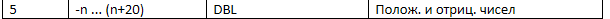

Для выполнения задания создан ВПП, генерирующий случайные числа в диапазоне:

Предельные значения данного диапазона Nmin и Nmax зависят от значения числа, вводимого в элемент управления "Число n".
При правильном выполнении данного ВП, после ввода числа n и после запуска ВПП щелчком по кнопке "Run" на индикаторах Nmin и Nmax должны отобразиться предельные значения заданного диапазона случайных чисел, а на индикаторах "Результат" должно появиться случайное число из заданного диапазона.